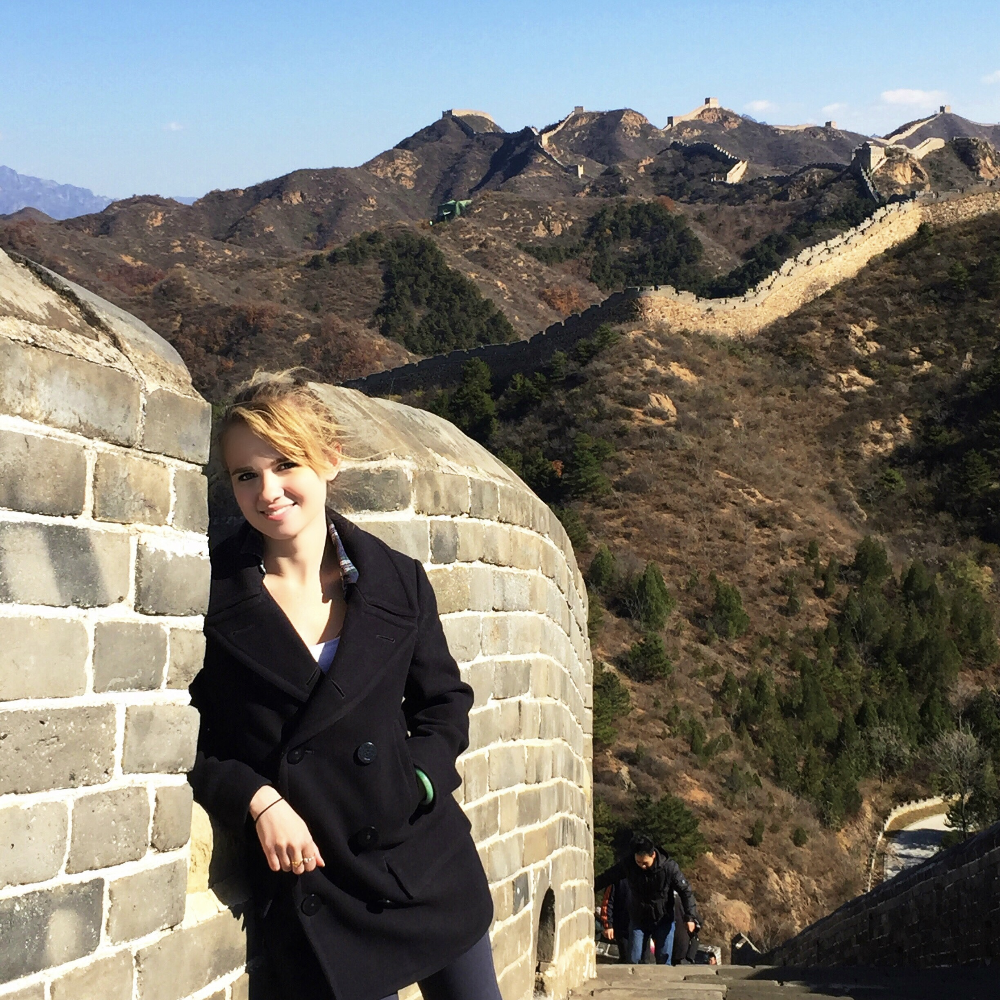
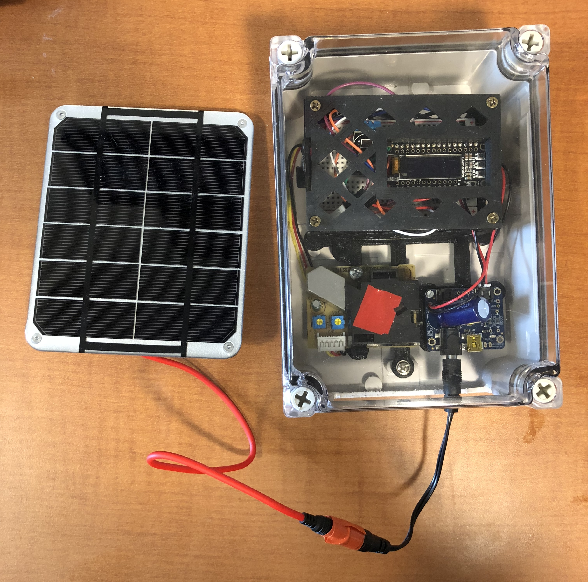

Work Experience Differentiators
Here is what makes me different

- Ability to Communicate with all audiences
I specialize in communicating technical concepts in plain English. I began honing this skill during my undergraduate studies. The Science, Technology, and International Relations (STIA) program at Georgetown focuses on bridging the gap between learning technical and scientific concepts and effectively communicating their principles and results to key decision-makers without a scientific background. I continue to practice this skill during my tutoring sessions with students and when explaining my current projects.
- Excel at teaching myself
I have extensive experience in self-learning and mastering complex skills at my own pace. During my high school years, I taught myself Mandarin for my language credits, achieving proficiency enough to pass the HSK Level 2 exam. Even years before starting my Master’s Program, I delved into computer science principles and coding. When I needed to supplement my learning or explore advanced topics during my Master’s Program, I confidently utilized online resources to enhance my understanding.
Throughout my professional life, I have repeatedly demonstrated the ability to learn new concepts swiftly. For instance, during a summer internship, I was entrusted with developing a social media strategy for a significant white paper release. Despite lacking prior experience in social media due to my personal disinterest, I swiftly acquired knowledge about social media strategies and successfully executed my plan. My performance was so impressive that the company offered me a full-time position as their Communications Coordinator. This role was newly created, and I lacked a roadmap, necessitating rapid learning in areas such as public relations, social media, marketing strategies, newsletter best practices, and more. My extensive personal and professional experience has honed my ability to hit the ground running and quickly adapt to new challenges.
- Soft skills and hard skills in one person
I am a results-oriented professional with a unique combination of technical and interpersonal skills. My technical proficiency includes expertise in statistics, Python, R, databases, and model building, enabling me to tackle complex challenges with precision. I have also gained experience in various sciences, such as environmental science, physics, and chemistry. I even built an air quality monitor at Georgetown using Arduino and C++. I am comfortable with intricate scientific concepts and make a conscious effort to maintain my expertise and continuously expand my knowledge.
Beyond my technical abilities, I possess strong soft skills that complement my technical expertise. These include leadership experience, effective communication, adaptability, and a collaborative mindset. These skills contribute to successful teamwork and project outcomes. I am also experienced in project management, marketing, SEO, website maintenance, sales, and building relationships with key stakeholders. Additionally, I’m well-versed in several creative platforms, including Figma and Linearity Curve Vector Art. I relish the opportunity to infuse creativity into projects and ensure their aesthetic appeal.
This unique blend of technical and soft skills allows me to navigate intricate technical landscapes while also fostering personal connections with colleagues and stakeholders. This personal touch creates a positive and productive work environment. My ability to balance and leverage both hard and soft skills ensures a holistic and effective approach to any professional endeavor.
- Comfortable in fully remote environments
I thrive in remote work environments and excel in collaborative team settings, regardless of geographical distances. I have experience working remotely in professional job settings and during various points in my education. Adapting to virtual collaboration tools comes naturally to me, and I am proficient in using platforms that facilitate seamless communication and project management. My experience working remotely has honed my ability to maintain open lines of communication, foster teamwork, and ensure project goals are met effectively. I am adept at leveraging technology to bridge gaps and create a cohesive and efficient remote work environment.
While at my previous job, I successfully managed teams remotely, overseeing multiple projects with a fully remote team. Despite the physical distance, I cultivated close relationships with my colleagues, which helped foster new and innovative ideas for the company through our conversations.
During my Master’s Program, we frequently engaged in group projects requiring working with people in different locations and various work schedules. Despite these challenges, we could collaborate on writing papers, coding, and creating presentations. Whether through video conferences, instant messaging, or project management platforms, I am committed to maintaining a high level of engagement and productivity in any remote work setting.